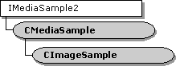

description: The CImageSample class implements a media sample that manages a GDI device-independent bitmap (DIB). ms.assetid: 620ea791-458e-441e-8f0c-2184c44c742e title: CImageSample class (Winutil.h) ms.topic: reference ms.date: 4/26/2023 topic_type:
[The feature associated with this page, DirectShow, is a legacy feature. It has been superseded by MediaPlayer, IMFMediaEngine, and Audio/Video Capture in Media Foundation. Those features have been optimized for Windows 10 and Windows 11. Microsoft strongly recommends that new code use MediaPlayer, IMFMediaEngine and Audio/Video Capture in Media Foundation instead of DirectShow, when possible. Microsoft suggests that existing code that uses the legacy APIs be rewritten to use the new APIs if possible.]

The CImageSample class implements a media sample that manages a GDI device-independent bitmap (DIB). This class derives from the CMediaSample class. It is intended to be used with the CImageAllocator class. The CImageAllocator class provides an allocator that creates CImageSample objects.
| Protected Member Variables | Description |
|---|---|
| m_DibData | Contains information about the DIB that this object is managing. |
| m_bInit | Indicates whether the object has been initialized. |
| Public Methods | Description |
| CImageSample | Constructor method. |
| GetDIBData | Retrieves information about the DIB that this object is managing. |
| SetDIBData | Sets information about the DIB that this object is managing. |
| Requirement | Value |
|---|---|
| Header | Winutil.h (include Streams.h) |
| Library | Strmbase.lib (retail builds); Strmbasd.lib (debug builds) |